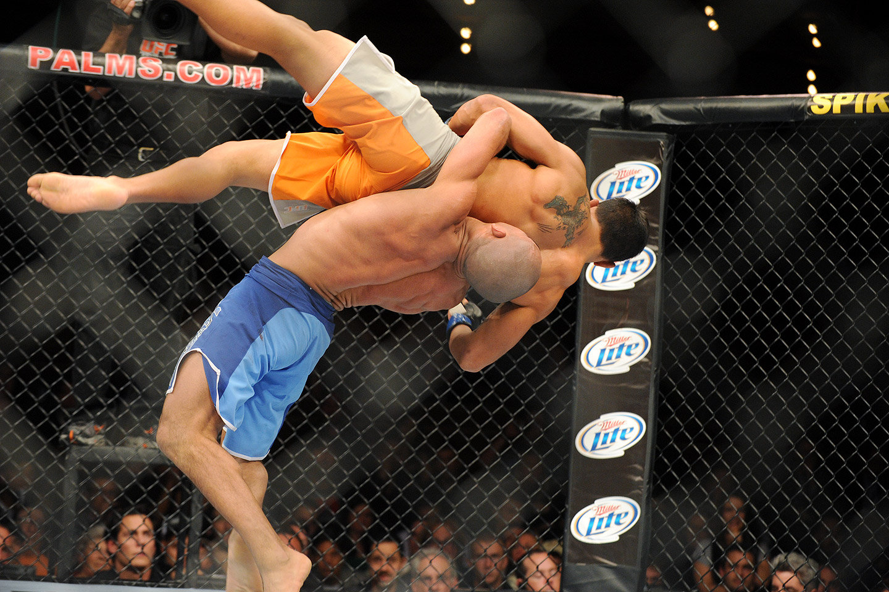
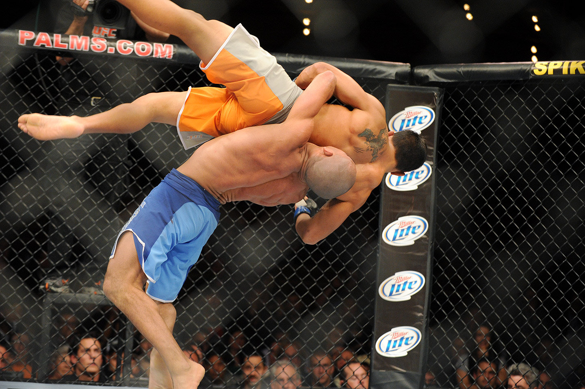

- История UFC
- Галерия
- Правила
- Раунды
- Весовые категории
- Эволюция UFC
- Выдающиеся бойцы
Ultimate
Fighting Championship
Спортивная организация, базирующаяся в Лас-Вегасе, США, и проводящая бои по смешанным единоборствам по всему миру. Изначально UFC задумывалась создателями как одноразовый турнир, позволяющий определить самое эффективное боевое искусство, и напоминала ранние бразильские состязания по вале-тудо. Успех первого турнира, состоявшегося в Денвере в 1993 году, стал мотивом проведения новых состязаний, однако под давлением властей штата Невада компании пришлось существенно изменить правила, превратив соревнования из зрелища в спорт.
В 2001 году, после приобретения компании владельцами сети казино, Лоренцо и Фрэнком Фертитта и назначения на должность президента организации бывшего промоутера бокса Дэйны Уайта,UFC начала агрессивную экспансию в Соединённые Штаты и другие страны.
   |
Своим появлением UFC обязана, в первую очередь, калифорнийскому бизнесмену Арту Дэйви.В 1991 году Дэйви, проводя исследование боевых искусств для торгового клиента, встретил Рориона Грейси, который заведовал школой бразильского джиу-джитсу в Торрансе, Калифорния, и стал его учеником. У семьи Грейси была долгая история проведения матчей по вале-тудо предшественнику смешанных боевых искусств в Бразилии. В 1992 году, вдохновленный видеосериями о победах Грейси над мастерами разных боевых искусств, Дэйви предложил Рориону и Джону Милиусу провести турнир из восьми участников под названием Война Миров. стилей без запретов, чтобы определить лучшее единоборство, повторяя азарт матчей на видео. Милиус, известный кинорежиссёр и сценарист, а также ученик Грейси, согласился быть креативным директором этого соревнования. Дэйви составил бизнес-план и двадцать восемь инвесторов внесли начальный капитал для создания компании WOW Promotions с намерением превратить турнир в телевизионное шоу. Ранее SEG уже продюсировал нетрадиционные состязания как, например, турнир Битва полов соревнование между мужчинами и женщинами по теннису, включавшее встречу Джимми Коннорса против Мартины Навратиловой. |
12 ноября 1993 года в Денвере прошло первое соревнование UFC. Список бойцов был разнообразен. В турнире приняли участие представители различных боевых искусств, что и привлекало зрителя. От семьи Грейси на турнир отправился Ройс, младший брат Рориона. Турнир был очень горячо принят и заработал огромный успех. На трибуны арены, где проводилось соревнование, пришло две тысячи восемьсот человек. Кроме того, восемьдесят пять тысяч зрителей смотрели шоу на платном канале. Основной вопрос многих зрителей был: "Сумеет ли борец победить боксера?" Тогда большинство спортсменов владели лишь одним боевым искусством, а бои в других видах не были им знакомы. Представитель борьбы стал первым победителем UFC.